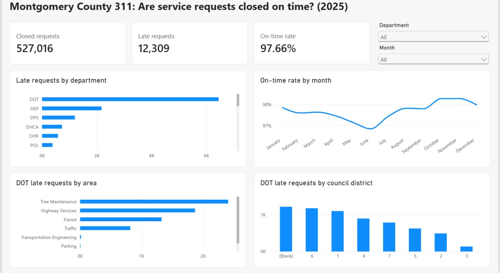

Montgomery County 311 On-Time Analysis
MySQL 8.0, MySQL Workbench, Power BI, DAX, Python (matplotlib)
Every 311 request comes with a promise: a deadline to resolve it. How often does Montgomery County keep that promise, and where does it fall behind?
531,108service requests from 2025
97.7%closed on time county-wide
52%of late requests came from DOT
The question
MC311 is how Montgomery County, Maryland residents report things like missed trash pickup, potholes, fallen trees, and bus problems. Each request gets a deadline in business days. I wanted to know how often departments meet that deadline, which ones miss it, and when and where they fall behind.
What I did
- Loaded the data: all 531,108 requests from 2025 into MySQL with
LOAD DATA. - Checked it first: no duplicate IDs, open requests matched “In Progress” exactly, and the county’s on-time flag matched “days open is at most the deadline” for every closed request.
- Cleaned it: real dates and numbers,
NULLfor blanks, and standardized city names (584 spellings down to 456). - Analyzed it in SQL: on-time rates by department, service area, month, and council district, using
GROUP BY,CASE WHEN, CTEs, and window functions (LAG,RANK,AVG() OVER ()). - Built a Power BI dashboard from a SQL view of the 527,016 closed requests with a deadline, with DAX measures for late requests and on-time rate, and slicers for department and month.
What I found
- One department drives most of the misses. Of 12,309 late requests, the Department of Transportation (DOT) had 6,449. DOT was on time 89.8% of the time, 8.2 points below the average department.
- Tree requests are DOT’s biggest gap. Tree Maintenance was on time only 77.2% of the time, and “Inspect, Remove or Prune County Tree” only 66%.
- DOT falls behind in spring and summer. Its on-time rate drops from 93.3% in January to 85.1% in June, then recovers in the fall.
- Location matters for DOT. Districts 6, 4, and 7 were around 81 to 82% on time for DOT requests, compared with 87.7% in District 3.
The hard part
- Half the requests had no location. 53% had no zip code or council district. Before comparing districts, I tested whether those rows were different, and they were: 99.0% on time vs. 96.1%, because most were questions or referrals, not work at an address. So I compared districts using only requests with a location.
- Same city, different spellings. “SILVER SPRING” and “Silver Spring” counted as two cities until I standardized them.
What I’d recommend
- Add tree inspection and removal capacity from April through July, before the backlog builds.
- Revisit tree request deadlines. Missing a third of one request type’s deadlines suggests the staffing or the promise should change.
- Start any DOT fix in Districts 4, 6, and 7, where residents wait longest.
If I kept going
- Test whether the district gaps are statistically significant. District 3 has only 1,105 Transportation requests, so its higher rate could partly be noise.
- Add more years to confirm the seasonal pattern.
- Connect Power BI straight to the database so the dashboard refreshes with new requests.
